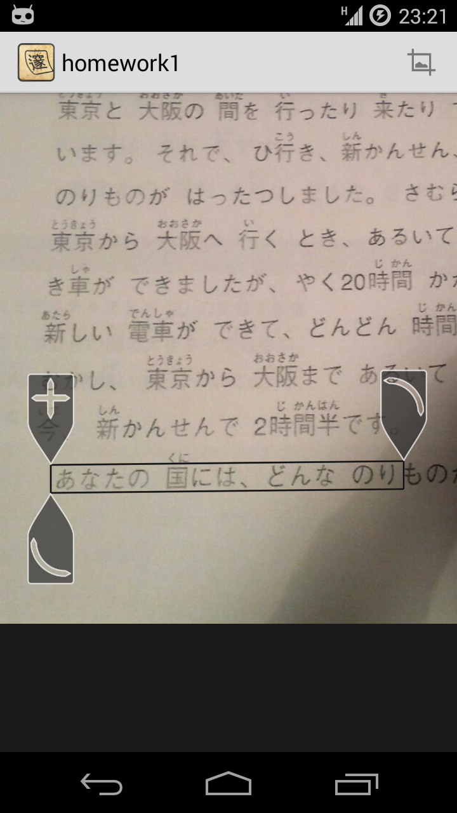

Japanese text recognizer which scans documents and photos
Save several hundred dollars/euros, no hardware dictionary necessary. If you need a complete Japanese dictionary with many kinds of kanji and word search, Aedict is for you.


Customer Experience
Helpful Addition to Aedict Text recognition is already pretty good, scanned text can easily be corrected, if necessary and then analyzed in Aedict.
Oliver Weber
Very good for first release I tried the app on a manga (vertical text) and it worked quite well. I had to add some small corrections (がinstead ofヵ) but I guess it will get better.
Daniel Sangorrin
Nice work, improvements still welcome Good combination of efficient OCR libraries which gives a system with quite good accuracy. Still needs UI improvements
Rémi NGUYEN VAN
Photo OCR Demo
OCRing other Android apps
What is Aedict OCR?

OCR
Aedict3 OCR is a stand-alone application which performs OCR (optical character recognition) of Japanese text, preferably on a simple white background. You can store multiple pages of Japanese text, gradually perform OCR over parts of these pages, correct the OCRed text and analyze the text with Aedict3.
Aedict OCR uses an off-line OCR engine. Such engines uses a lot of processor power, which in turn will drain your battery faster and may heat up your phone in extreme cases. The algorithm is good, but it is not perfect and it may mis-find some characters. You will get best results for a black-on-white sharp images, with uniform white background, such as printouts. The algorithm is probably next to unusable on color-y magazine covers and hand-drawn kanjis (found for example on temples).
Aedict3 OCR works on Android 4.0 and greater.

Advanced OCR Tool
You can perform OCR step-by-step, on a portion of text. When the text is recognized, you can fix mis-detected characters using the Aedict OCR&pos;s built-in correction tools, then join the OCRed areas into one paragraph.

Tategaki
Tategaki (column writing) is supported and is auto-detected. You can force the Tategaki mode if the auto-detection does not work properly.

Advanced OCR Tool
Aedict OCR will assist you with fixing the mis-detected characters. Built-in fix tools include change case, kanji-kana, cycle diacritics, merge adjacent kanji parts and more.
And More
- Text auto-correction and manual correction (ば -> ぱ, つっ etc)
- Back-up and restore of images and texts, to the internal phone memory, ownCloud and Dropbox
- Aedict3 OCR remembers OCRed images and OCRed text for these images